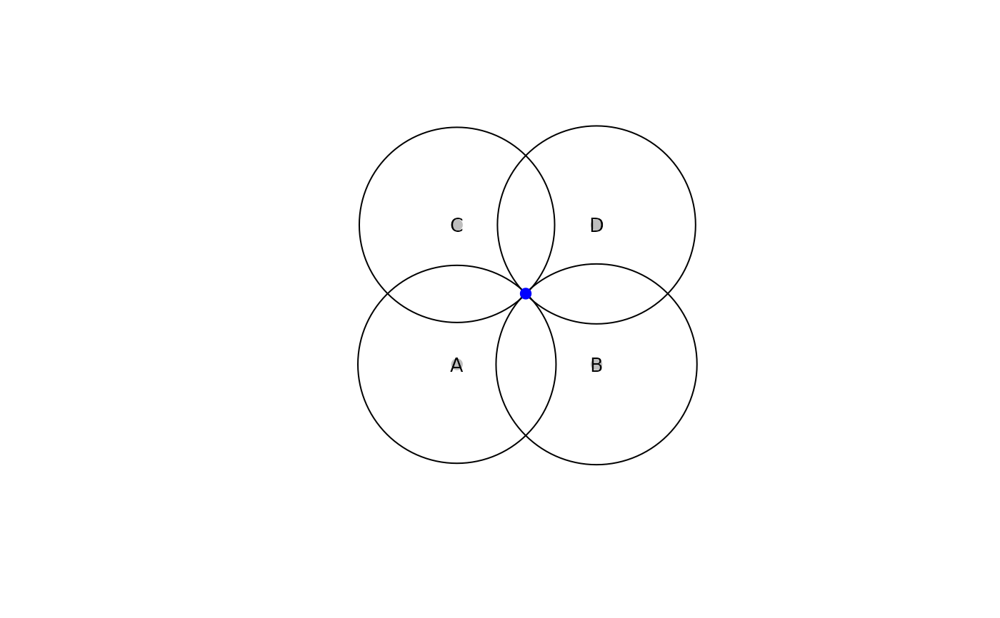

Determine target point coordinates from distances to known points
Source:R/multilaterate.R
multilaterate.RdDetermine target point coordinates from distances to known points
Arguments
- distances
A named vector containing the distances from at least 3 ref_points to the target point.
- ref_points
An sf object containing the reference point geometry and a 'Name' column.
- crs
A projected coordinate reference system to use in the distance calculations if
ref_pointsdoes not already have a projected CRS.- plot
Logical, whether to plot the multilateration solution.
Value
A list, with xy coordinates in coords, measures of coordinate and positional uncertainty in se, and the mean ellipsoidal height of the reference points in mean_ellipsoid_height.
Details
This function performs 2D multilateration via optimization. The optimization will fail or give nonsensical results if the units of distances and crs are not identical. It is recommended that both use meters. The standard errors for the x coordinate, y coordinate, and xy positional uncertainty are calculated from the Hessian of the objective function.
Examples
d <- c(A = 7.1, B = 7.2, C = 7.0, D = 7.1)
ref <- sf::st_as_sf(data.frame(
Name = c("A", "B", "C", "D"),
x = c(0, 10, 0, 10),
y = c(0, 0, 10, 10)
), coords = c("x", "y"), crs = 32613)
multilaterate(distances = d, ref_points = ref)

#> Warning: argument is not numeric or logical: returning NA
#> $coords
#> x y
#> 4.929006 5.070994
#>
#> $se
#> se_x se_y se_xy
#> 0.02024968 0.02024968 0.02863737
#>
#> $mean_ellipsoid_height
#> [1] NA
#>